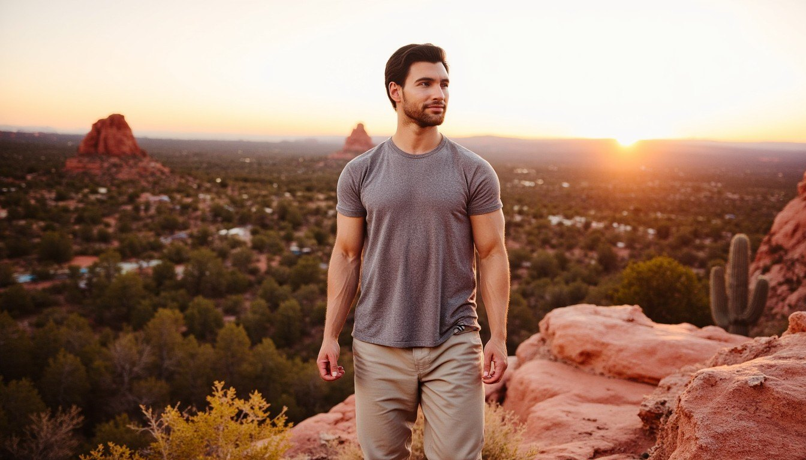
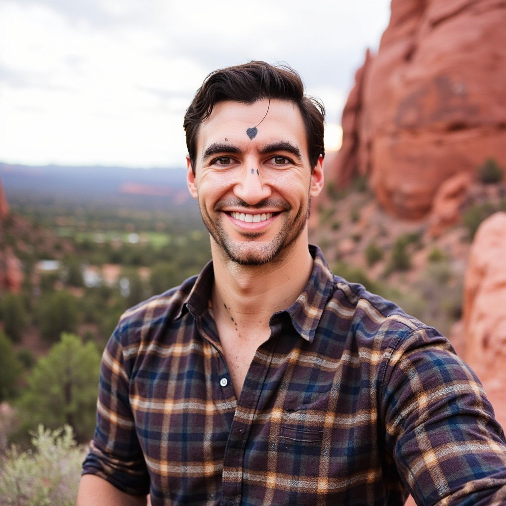
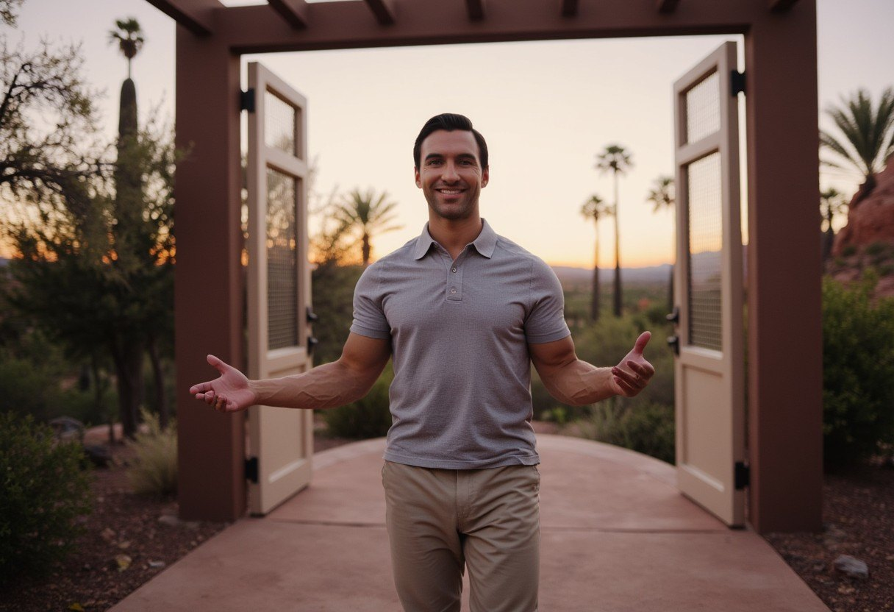
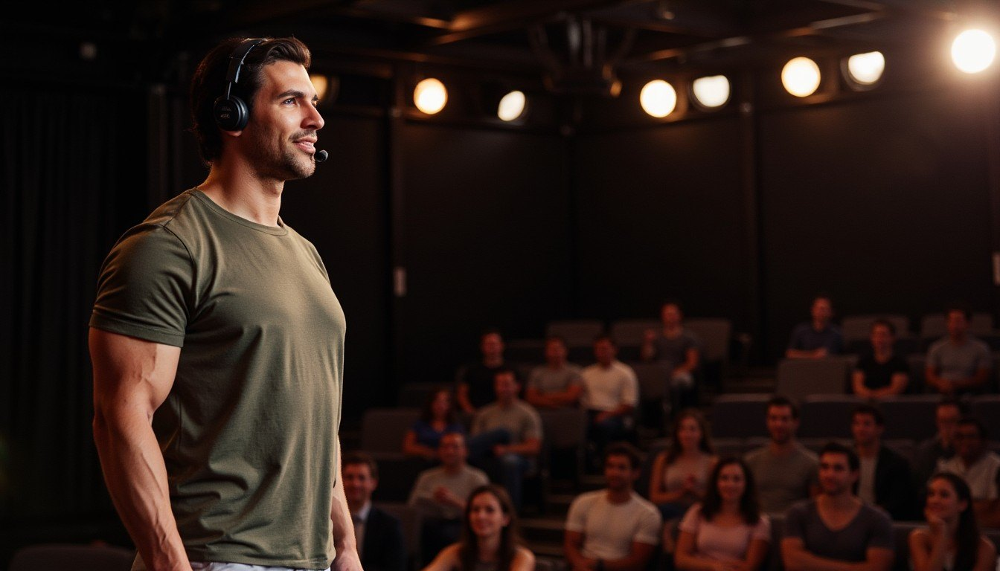
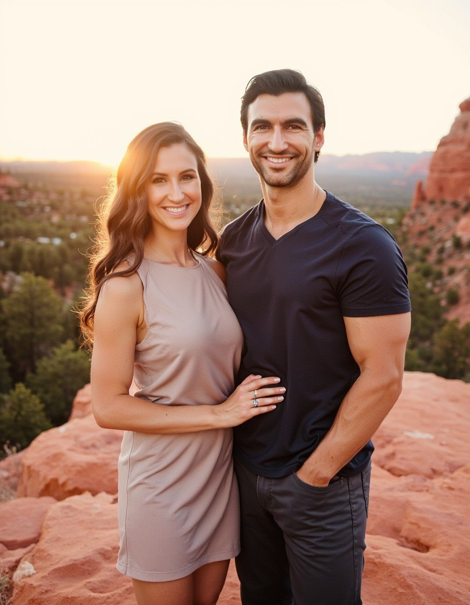
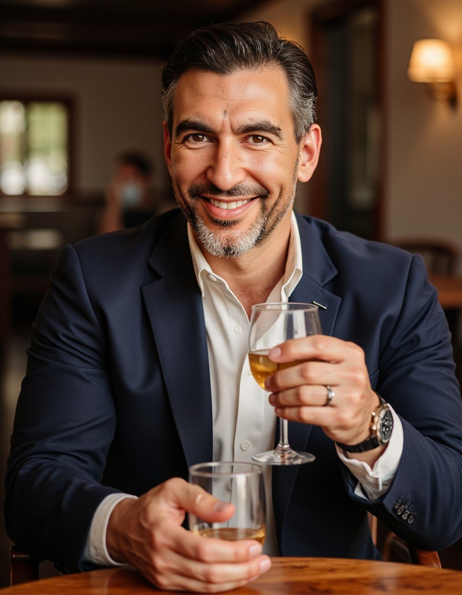
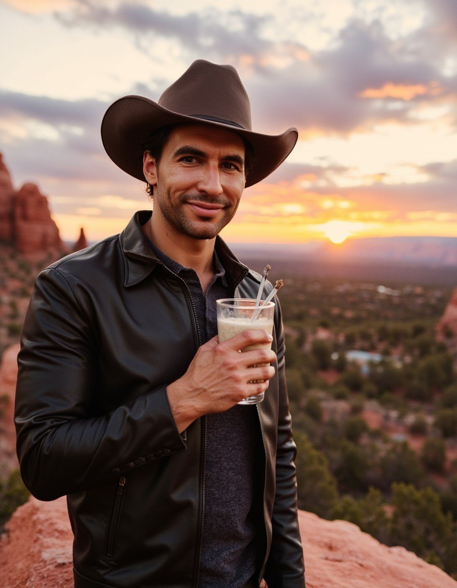
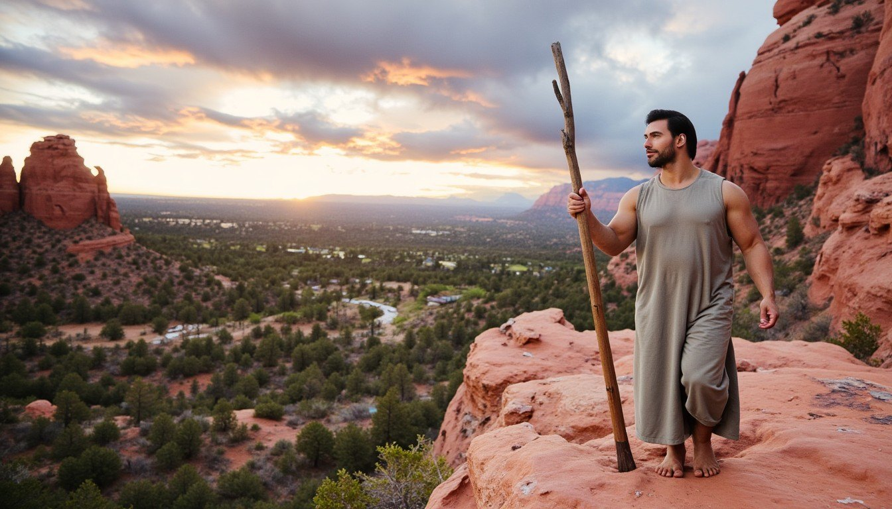
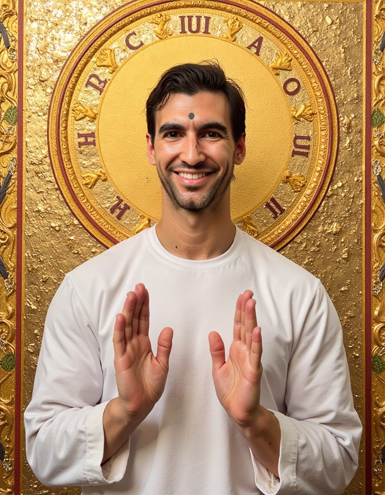
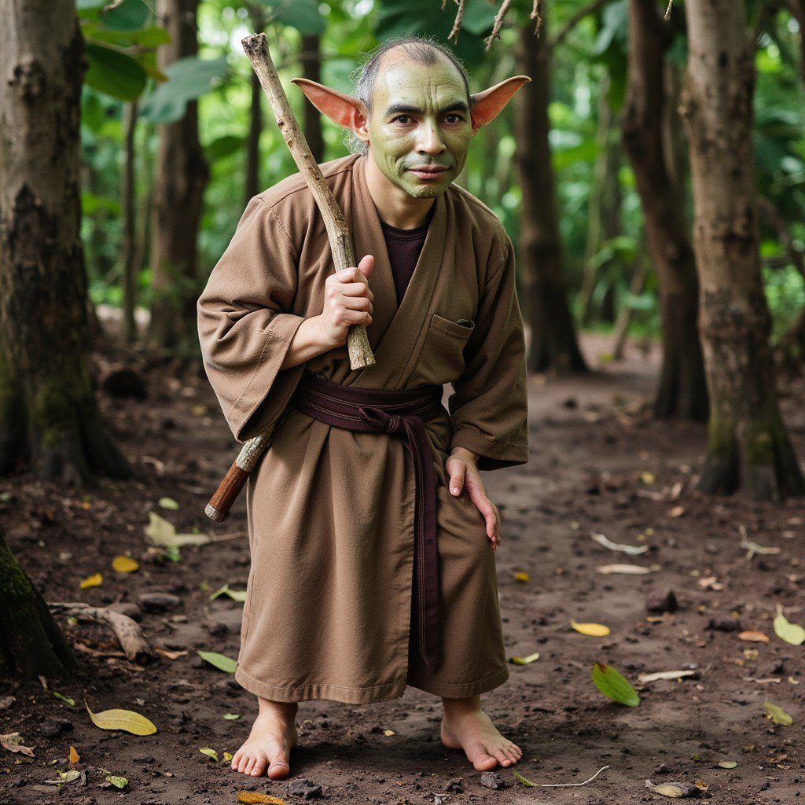

v2 trained on 19 candid photos instead of the polished 21. Dropped the studio-branded shots, added family + baby + jungle + recovery. Rank bumped to 48, steps to 2000. Result: way more Anthony, way less gigachad. 5 serious test renders for the live page. 5 funny for the campaign.









